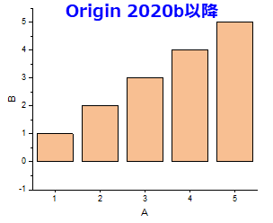
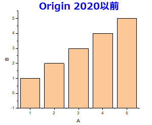

最終更新日：2020/7/9
Origin 2020bから、縦棒/横棒グラフは、表示されているかどうかに関係なく、追加の線を起点として描かれます。追加の線はデフォルトでは、Y = 0 に設定されています。線を非表示にすると、縦棒/横棒グラフはベースラインとしてY = 0を使用し、描かれます。これは、縦棒/横棒が常にX / Y軸から始まる以前のバージョンとは異なります。
|  |  |
以前のバージョンのように、縦棒/横棒グラフのベースを軸に設定するには
キーワード：棒, 最低値, 最低値の軸, 横棒, 追加の線, 0を起点